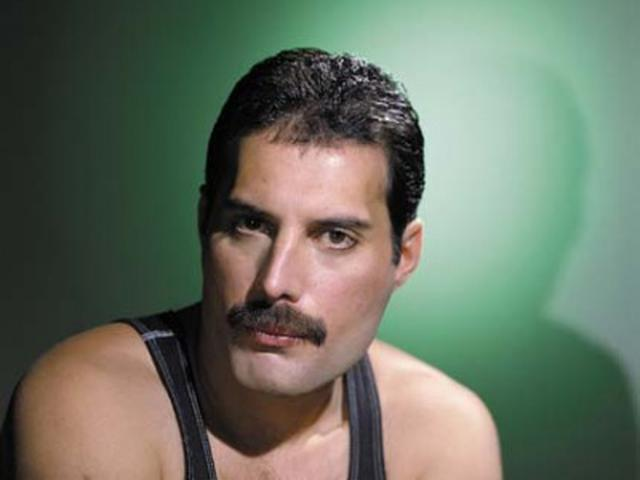

 Frederick "Freddie" Mercury (lahir Farrokh Bulsara; 5 September 1946 – 24 November 1991) adalah seorang penyanyi-penulis lagu dan produser rekaman dan vokalis utama dari band rock Queen berkebangsaan Inggris. Dia dianggap sebagai salah satu dari penyanyi terbaik dalam sejarah musik populer,dan dikenal atas kepribadian flamboyan di panggung dan jangkauan vokal empat-oktafnya.
Mercury lahir di Zanzibar dari orang tua Parsi yang berasal dari India. Setelah tumbuh di Zanzibar dan kemudian India, keluarganya pindah ke Middlesex, Inggris, di akhir masa remajanya. Dia membentuk Queen pada tahun 1970 bersama gitaris Brian May dan drummer Roger Taylor. Mercury menulis banyak hit untuk Queen, termasuk "Bohemian Rhapsody", "Killer Queen", "Somebody to Love", "Don't Stop Me Now", "Crazy Little Thing Called Love", dan "We Are the Champions". Dia juga bersolo karier disamping Queen, dan terkadang menjadi seorang produser dan musisi tamu untuk artis lain. Mercury meninggal pada tahun 1991 pada usia 45 tahun karena komplikasi dari AIDS, setelah mengkonfirmasi sehari sebelum kematiannya bahwa dia telah tertular penyakit itu.
Sebagai anggota dari Queen, dia dimasukkan kedalam Rock and Roll Hall of Fame pada tahun 2001, Songwriters Hall of Fame pada tahun 2003, dan UK Music Hall of Fame pada tahun 2004. Pada tahun 1992, setahun setelah kematiannya, Mercury secara anumerta dianugerahi di Brit Award sebagai Outstanding Contribution to British Music, dan sebuah konser penghormatan diadakan di Stadion Wembley, London. Pada tahun 2002, dia berada di nomor 58 dalam jajak pendapat oleh BBC sebagai 100 Greatest Britons. Mercury terpilih sebagai penyanyi pria terbaik sepanjang masa dalam sebuah jajak pendapat tahun 2005 yang diadakan oleh Blender dan MTV2.
Mercury juga berada di posisi 18 dalam daftar 100 penyanyi terbaik yang pernah ada oleh Rolling Stone pada tahun 2008. dan berada di posisi kedua di daftar pilihan pembaca Rolling Stone pada tahun 2011. Mercury digambarkan oleh AllMusic sebagai "salah satu dari penampil rock terbaik sepanjang-masa," dengan "salah satu suara terbaik dalam segala jenis musik."Setelah dirilis pada bulan November 2018, film biografi tentang Mercury dan Queen, Bohemian Rhapsody, menjadi film biografi musik terlaris sepanjang masa.